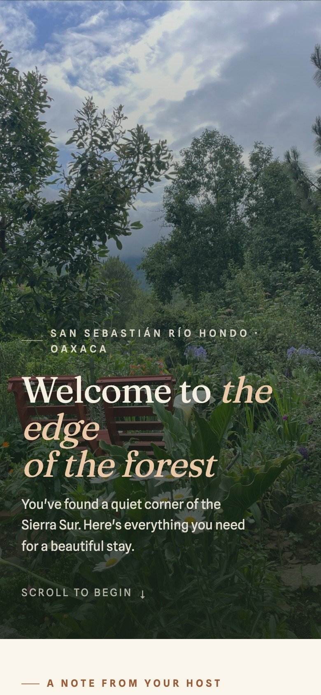
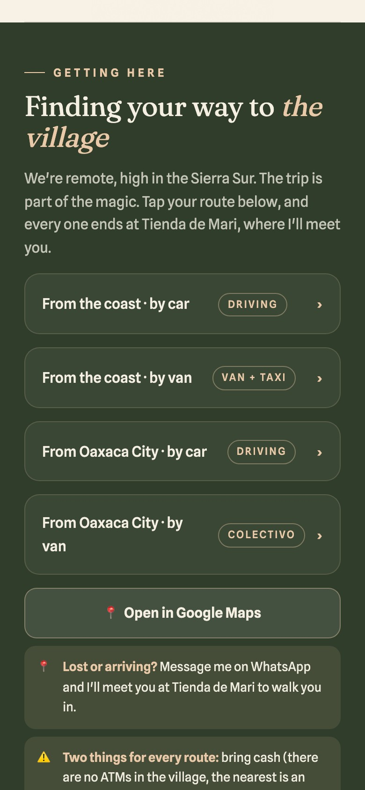
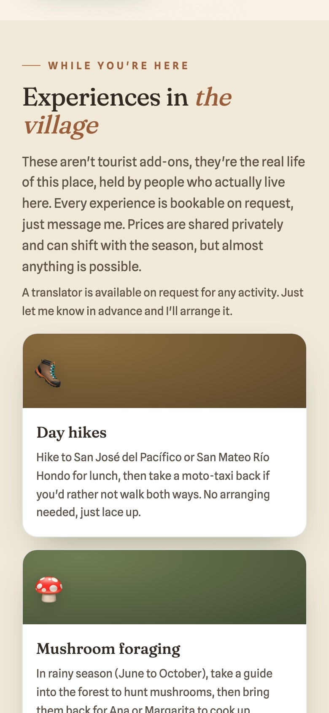
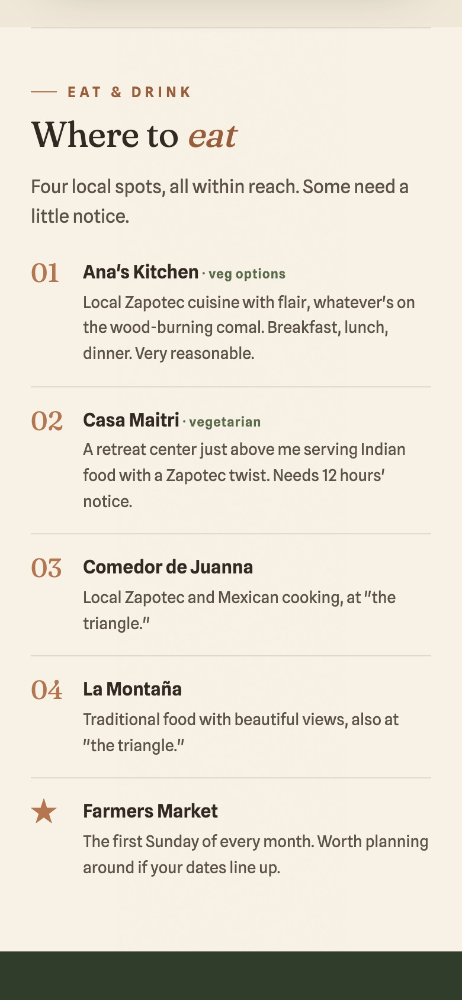

Guests come to Casa Yani for the quiet: forest trails, mountain air, and the slow rhythm of a village most travelers never find.
It is a retreat kind of trip, the sort of stay where the place itself is the whole reason you came.
Before the guide, everything a guest needed was scattered across chat threads. They would scroll back through Airbnb looking for the WiFi, or message Janet to ask how to find the house, or how to arrange a temazcal.
Janet answered the same questions for every new arrival. And every so often, in the middle of a busy day, she would forget to mention something worth knowing.
We put all of it in one calm place, built around her home and her village. A single link she sends before arrival, so guests can see the whole stay before they ever set out.




What I appreciate most is the extra time I save and having happier guests! And not forgetting to tell them about something!
Guests have been delighted with the ease and use instead of scrolling on Airbnb for information or contacting me.
Built in 48 hours. Fully her brand. She answered a few questions, and nothing else.